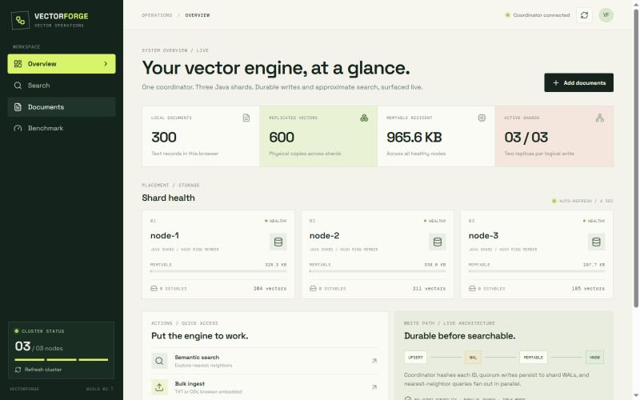
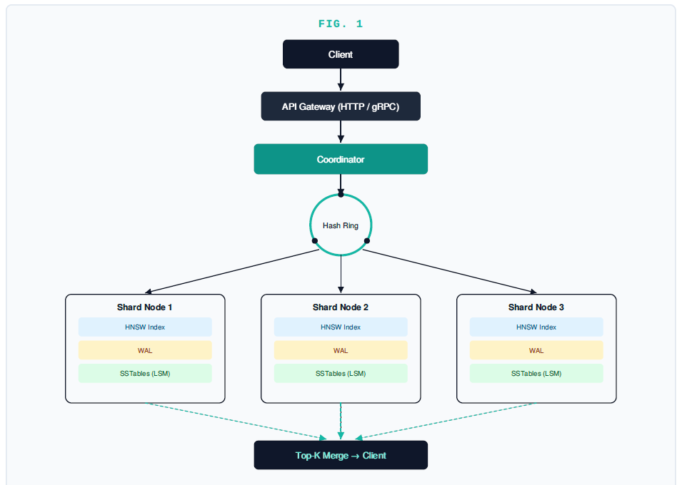
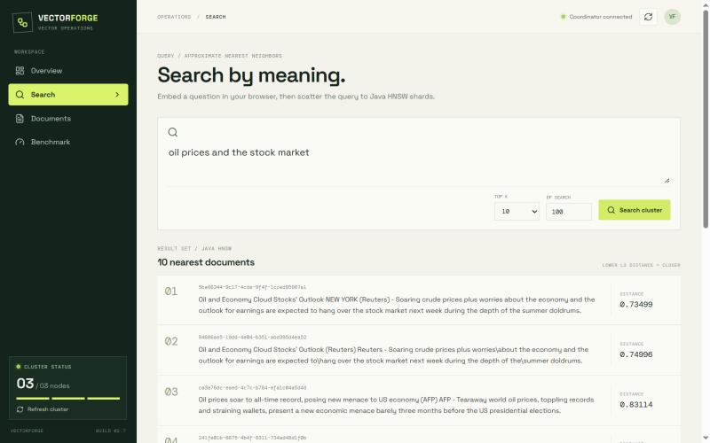

What's inside
Custom HNSW
Approximate nearest-neighbor search, with an exact brute-force baseline to measure recall against.
Durable storage
Write-Ahead Log recovery, Memtable flushing, SSTables, Bloom filters and compaction.
Distribution
Consistent hashing with virtual nodes, two copies of each document and quorum writes.
Parallel queries
Each query goes to all shards, and the results are merged into one global Top-K.
In-browser embeddings
Transformers.js runs all-MiniLM-L6-v2 in your browser. No API key is needed.
React dashboard
Cluster health, semantic search, document management and live benchmarks.

How it works
The browser turns text into vectors. The Java coordinator places each vector on two shards using a hash ring. A search fans out to every shard and merges the answers. Document text stays in your browser (IndexedDB), while the shards store the vectors. The services talk over HTTP/JSON.

Set it up on your machine
You need Git, JDK 21 or newer (java and javac on your PATH), Node.js 18 or newer with npm, and an internet connection for the first run. The ports 5173, 8080 and 9101 to 9103 must be free.
The commands below are for Windows PowerShell. The services have no authentication and listen on your network, so run them only on a network you trust.
1. Download the code
git clone https://github.com/harshiittttt/VectorForge--A-Vector-Database.git
cd VectorForge--A-Vector-Database2. Start with an empty database
Do this once, right after cloning. The repository includes old saved vectors whose text is not included, so search results would appear blank. This command renames that folder and keeps it as a backup.
Rename-Item data data-original3. Start everything
Quick way (Windows): run the included launcher. It compiles the Java code, installs the frontend packages if needed, opens each service in its own window and opens the dashboard. It also stops VectorForge services that don't match its setup.
.\START_VECTORFORGE.batManual way: five terminals
Open every terminal in the project folder. First, compile and install:
$sources = Get-ChildItem api,cluster,shard-node,storage-engine,vector-index,benchmark,client-sdk -Recurse -Filter *.java -File |
Where-Object { $_.FullName -match '\\src\\main\\java\\' } |
ForEach-Object { $_.FullName }
New-Item -ItemType Directory -Force .dist\javac-classes | Out-Null
javac --add-modules jdk.httpserver,jdk.incubator.vector -d .dist\javac-classes $sources
cd frontend; npm install; cd ..A warning about the incubator module is expected. Then start the three shards, one per terminal.
java '--add-modules' 'jdk.httpserver,jdk.incubator.vector' -cp .dist/javac-classes com.vectorforge.shardnode.ShardNodeGateway 9101 data\process-shard-1java '--add-modules' 'jdk.httpserver,jdk.incubator.vector' -cp .dist/javac-classes com.vectorforge.shardnode.ShardNodeGateway 9102 data\process-shard-2java '--add-modules' 'jdk.httpserver,jdk.incubator.vector' -cp .dist/javac-classes com.vectorforge.shardnode.ShardNodeGateway 9103 data\process-shard-3When all three say they have started, run the coordinator in a fourth terminal:
java '--add-modules' 'jdk.httpserver,jdk.incubator.vector' '-Dvectorforge.remoteShards=http://localhost:9101,http://localhost:9102,http://localhost:9103' -cp .dist/javac-classes com.vectorforge.api.http.HttpGatewayIn a fifth terminal, start the dashboard:
cd frontend; npm run devmacOS or Linux (not tested on these systems)
Rename the old data, compile and install:
mv data data-original
mkdir -p .dist/javac-classes
javac --add-modules jdk.httpserver,jdk.incubator.vector -d .dist/javac-classes $(find . -name '*.java' -path '*/src/main/java/*')
(cd frontend && npm install)Then use the five commands from the manual way, replacing \ with / in the data paths.
4. Open the dashboard
Go to http://localhost:5173. The header should say the coordinator is connected, and the overview should show 03 / 03 active shards. This link works only while VectorForge is running on your computer.
How to use it
Add documents
- Open Documents.
- To add one document, paste its text and click Embed & index.
- To add many, choose a TXT file (one document per line) or a CSV with a
textcolumn, then click Start ingest.
The repository includes sample news in raw_data[News_articles]. The file ag_news_10000.txt has about 10,000 lines. In our test, 300 lines took under a minute, so expect the full file to take around 15 minutes or more, depending on your computer. To try it quickly, make a 300-line sample:
Get-Content -LiteralPath 'raw_data[News_articles]\ag_news_10000.txt' -TotalCount 300 -Encoding UTF8 | Set-Content sample-300.txt -Encoding UTF8The first embedding downloads the model, which your browser then caches.
Search by meaning
Open Search, type a phrase such as oil prices and the stock market, and click Search cluster. A lower distance means a closer match. Top K sets how many results you get. A higher ef search value examines more candidates, which can improve recall but may take longer.

Benchmark
Open Benchmark and click Run benchmark to compare HNSW with exact search for recall and response time. The project's reported results on 11,000 documents:
| Exact search latency | 19.26 ms per query |
|---|---|
| Best Recall@K | 99% |
| Best observed speedup | 4.77× |
| Test settings | 20 queries, K = 5 |
Your numbers will differ with your hardware and data. With only a few hundred documents, HNSW may be no faster than exact search.
Stop and restart
Press Ctrl+C in each service window. Your data stays in the data folder and is restored from the Write-Ahead Log at the next start. Use the same browser, because it holds the document text. Don't repeat step 2 unless you want to start empty again.
Troubleshooting
| Problem | What to do |
|---|---|
| Results say the text is not in the local cache | The vectors were added from another browser, or came from the old data folder. Use the original browser, or stop the services, move data elsewhere and add the documents again. |
| Dashboard shows offline or unhealthy shards | Start all three shards first, wait for recovery to finish, then start the coordinator. |
| Port already in use | Stop the program using that port, then start again. |
javac is not recognized | Install JDK 21 or newer and add its bin folder to PATH. |